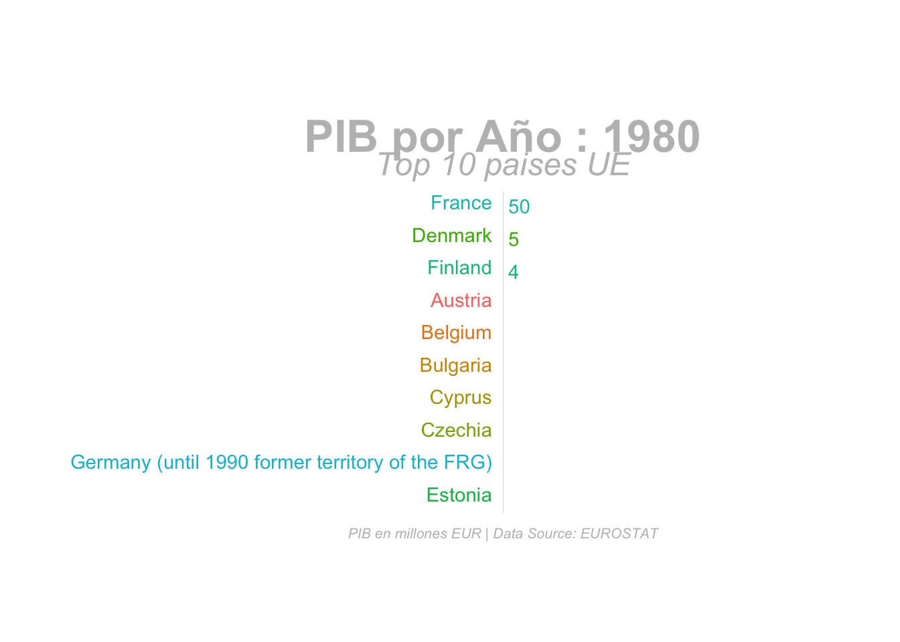

2 Top 10 paises UE por PIB
En este gráfico de barras se muestra la evolución del ranking del PIB de los paises de la Unión Europea desde el año 1980.
Podemos observar que Alemania, Francia, Italia y España ocupan los primeros puestos sin cambios durante el periodo considerado.
##
Frame 1 (1%)
Frame 2 (2%)
Frame 3 (3%)
Frame 4 (4%)
Frame 5 (5%)
Frame 6 (6%)
Frame 7 (7%)
Frame 8 (8%)
Frame 9 (9%)
Frame 10 (10%)
Frame 11 (11%)
Frame 12 (12%)
Frame 13 (13%)
Frame 14 (14%)
Frame 15 (15%)
Frame 16 (16%)
Frame 17 (17%)
Frame 18 (18%)
Frame 19 (19%)
Frame 20 (20%)
Frame 21 (21%)
Frame 22 (22%)
Frame 23 (23%)
Frame 24 (24%)
Frame 25 (25%)
Frame 26 (26%)
Frame 27 (27%)
Frame 28 (28%)
Frame 29 (29%)
Frame 30 (30%)
Frame 31 (31%)
Frame 32 (32%)
Frame 33 (33%)
Frame 34 (34%)
Frame 35 (35%)
Frame 36 (36%)
Frame 37 (37%)
Frame 38 (38%)
Frame 39 (39%)
Frame 40 (40%)
Frame 41 (41%)
Frame 42 (42%)
Frame 43 (43%)
Frame 44 (44%)
Frame 45 (45%)
Frame 46 (46%)
Frame 47 (47%)
Frame 48 (48%)
Frame 49 (49%)
Frame 50 (50%)
Frame 51 (51%)
Frame 52 (52%)
Frame 53 (53%)
Frame 54 (54%)
Frame 55 (55%)
Frame 56 (56%)
Frame 57 (57%)
Frame 58 (58%)
Frame 59 (59%)
Frame 60 (60%)
Frame 61 (61%)
Frame 62 (62%)
Frame 63 (63%)
Frame 64 (64%)
Frame 65 (65%)
Frame 66 (66%)
Frame 67 (67%)
Frame 68 (68%)
Frame 69 (69%)
Frame 70 (70%)
Frame 71 (71%)
Frame 72 (72%)
Frame 73 (73%)
Frame 74 (74%)
Frame 75 (75%)
Frame 76 (76%)
Frame 77 (77%)
Frame 78 (78%)
Frame 79 (79%)
Frame 80 (80%)
Frame 81 (81%)
Frame 82 (82%)
Frame 83 (83%)
Frame 84 (84%)
Frame 85 (85%)
Frame 86 (86%)
Frame 87 (87%)
Frame 88 (88%)
Frame 89 (89%)
Frame 90 (90%)
Frame 91 (91%)
Frame 92 (92%)
Frame 93 (93%)
Frame 94 (94%)
Frame 95 (95%)
Frame 96 (96%)
Frame 97 (97%)
Frame 98 (98%)
Frame 99 (99%)
Frame 100 (100%)
## Finalizing encoding... done!